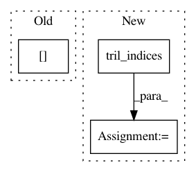

02a78c09404936e509bcbb3b10d9f9c6129c2263,geomstats/symmetric_positive_definite_matrices.py,,vector_to_matrix,#Any#,98
Before Change
for j in range(dim_mat):
for i in range(j + 1, dim_mat):
matrix[i, j] = matrix[j, i]
return matrix
After Change
dim_mat = int((np.sqrt(8 * dim_vec + 1) - 1) / 2)
matrix = np.zeros((dim_mat, dim_mat))
lower_triangle_indices = np.tril_indices(dim_mat)
diag_indices = np.diag_indices(dim_mat)
matrix[lower_triangle_indices] = 2 * vector / np.sqrt(2)
matrix[diag_indices] = vector
In pattern: SUPERPATTERN
Frequency: 4
Non-data size: 3
Instances
Project Name: geomstats/geomstats
Commit Name: 02a78c09404936e509bcbb3b10d9f9c6129c2263
Time: 2018-01-16
Author: ninamio78@gmail.com
File Name: geomstats/symmetric_positive_definite_matrices.py
Class Name:
Method Name: vector_to_matrix
Project Name: GPflow/GPflow
Commit Name: 5809cb0b339612434f4f332a91a2cd3e4570c34d
Time: 2018-02-26
Author: james@prowler.io
File Name: gpflow/transforms.py
Class Name: LowerTriangular
Method Name: backward_tensor
Project Name: GPflow/GPflow
Commit Name: 8a801031c5a5f34f5d83319aa99a9e0889bb56a1
Time: 2018-01-02
Author: art.art.v@gmail.com
File Name: gpflow/transforms.py
Class Name: LowerTriangular
Method Name: backward_tensor
Project Name: GPflow/GPflow
Commit Name: 314c5bd86e593b5e9720bc7fd943a86866358c2a
Time: 2017-10-03
Author: art.art.v@gmail.com
File Name: gpflow/transforms.py
Class Name: LowerTriangular
Method Name: backward